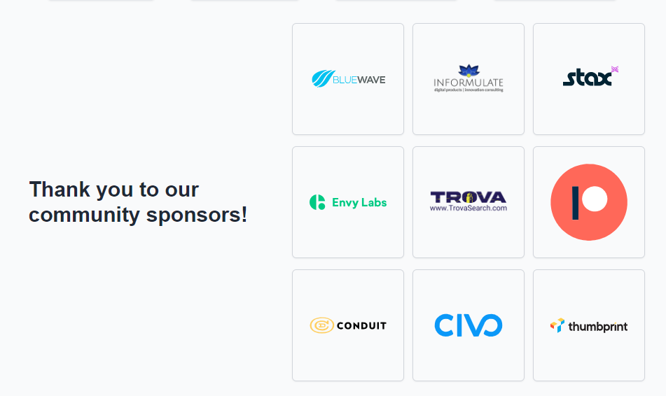

layout: true --- <img src="https://raw.githubusercontent.com/snohio/devopsorlando/main/docs/assets/OrlandoDevOps2-04.png" width="700"> ## October 2024 - Lean Green DevOps ### An Orlando Devs Community Group ??? Notes: --- class: inverse ## [Code of Conduct](https://orlandodevs.com/code-of-conduct/) > This code of conduct outlines our expectations for participants within the Orlando Devs community (relevant to both our Slack and Meetup), as well as steps to reporting unacceptable behavior. We are committed to providing a welcoming and inspiring community for all and expect our code of conduct to be honored. Anyone who violates this code of conduct may be banned from the community. ### Our open source community strives to: * Be friendly and patient. * Be welcoming: We strive to be a community that welcomes and supports people of all backgrounds and identities. * Be considerate: Your actions (and words) affect users and colleagues, and you should take those consequences into account. Remember that we’re a very diverse community, so you might not be communicating in someone else’s primary language. * Be respectful: Not all of us will agree all the time, but disagreement is no excuse for poor behavior and poor manners. It’s important to remember that a community where people feel uncomfortable or threatened is not a productive one. * Be careful in the words that we choose: we are a community of professionals, and we conduct ourselves professionally. Be kind to others. Do not insult or put down other participants. Harassment and other exclusionary behavior aren’t acceptable. * Try to understand why we disagree: Disagreements, both social and technical, happen all the time. It is important that we resolve disagreements and differing views constructively. ??? Notes: --- ## Thanks to our ODevs Sponsors  --- class: inverse # Today's Agenda <br> * 7:00 - Gathering. Put your topics on Post Its. * 7:10 - Official Welcoming Notes and instructions for Lean DevOps * 7:15 - Order some Vegan Goodness and Eat and Socialize * 7:40 - Presentation of Topics * 7:50 - Topic Voting by Google Survey * 7:55 - Votes are tallied and top ones are assigned a table / area * 8:00 - Lean DevOps begins * 8:55 - Wrap up / Survey Link --- class: inverse # Lean DevOps (Coffee) Format > Lean DevOps (Lean Coffee) is a process that allows everyone to participate in discussion with others whom they may not normally have a chance to talk with. > Like Agile itself, Lean Coffee sessions operate under a small set of steps. These steps are deceptively simple, yet provide just enough structure for spontaneous discussions: ### Steps 1. Write topics on a PostIt (these will be put into a Google Survey) 2. 30 Seconds to present your topic. 3. Vote on the Topics on the Survey (QR Code) 4. Topics are ordered to most votes to least. These are put on a Kanban Board. 5. We talk about the topics one at a time. Each topic you get 5 minutes to discuss. 6. After 5 minutes, more time (3 min) can be added with a majority vote. 7. When it is done, move that to Done and grab the next To Do <br> [More Info on Lean Coffee](https://leancoffee.org/) --- class: inverse # Presentation of Topics ## The hosts will read of the submissions. --- class: inverse # Voting time --- class: inverse ## Upcoming Events **Orlando Code Camp - https://orlandocodecamp.com** * Saturday, February 24 * Seminole State College !!FREE!! *** **Orlando DevOps | IaC Deep Dive - Compliance and Platform Standards - https://www.meetup.com/orlando-devops/events/298184694/** * Wednesday, February 28th * TBD but hopefully CREDO Conduit, Downtown Orlando Come have discussions about Platform Standards and a tool that can help you enforce them! --- class: inverse ## Thanks for Coming! <br><br> ### Please take a moment to scan the QR code and take our quick survey about this event! <br><br> <br> ### How to find us - [LinkedIn](https://www.linkedin.com/groups/12876376/) - [ODevs Slack](https://orlandodevs.com/slack/) ### [Link to this Deck](https://snohio.github.io/devopsorlando/decks/2024-02-13-Lean-Green-DevOps.html) ??? Thanks!!!